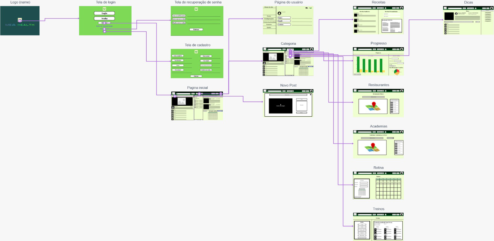
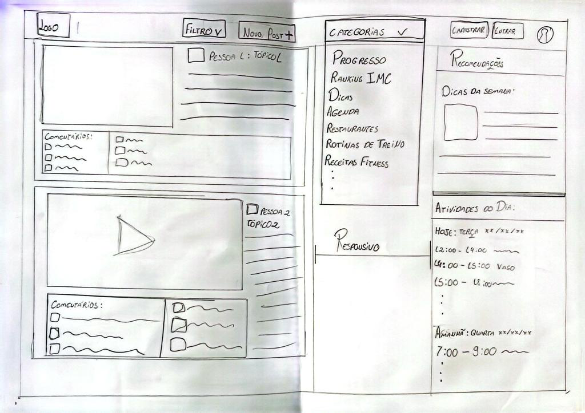
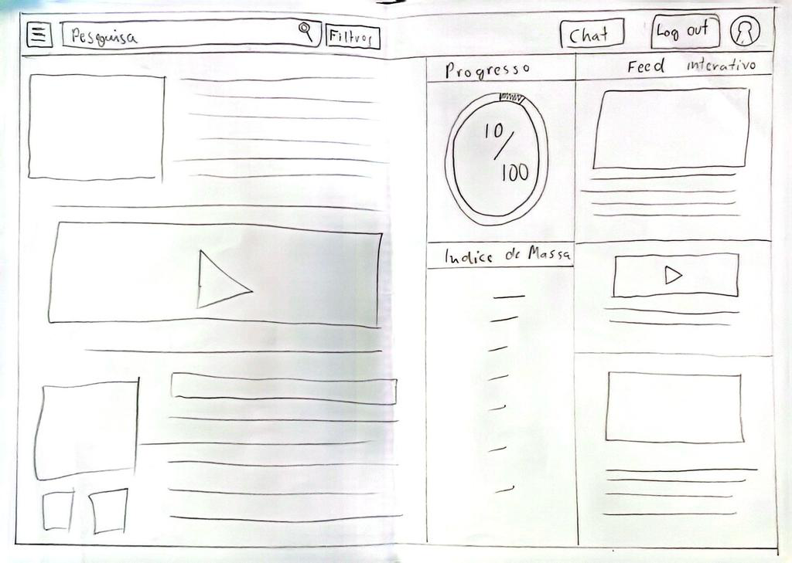

Introdução
Informações básicas do projeto como nome e membros da equipe.
Informações Gerais
- Projeto: Dificuldade em ter Hábitos Saudáveis (Mea Health)
- Repositório GitHub: Template Trabalho Interdisciplinar
- Membros da equipe:
Contexto
Problema
Neste trabalho, o problema a ser abordado será, Dificuldades Para Ter Hábitos Saudáveis, em que o Grupo 8 analisará e identificar as principais causas, efeitos, o público-alvo e suas dificuldades e encontrar todas as possíveis soluções para o problema em questão. Este problema é uma pauta muito presente na atualidade, envolvendo um grande público-alvo que apresenta ter inúmeras dificuldades para adquirir hábitos saudáveis, a exemplo de uma rotina desregulada, a falta de uma alimentação saudável e a prática de exercícios físicos, a dificuldade de muitas vezes as personas serem impossibilitadas de mantar uma vida saudável em questão da renda mensal, entre muitas outras causa, que por consequência implica diversas consequências negativas tanto para a saúde física quanto mental do público. Diante dessas dificuldades e após a análise e entrevista com diferentes personas, o grupo tende a desenvolver soluções para atender a diferentes realidades a fim de ajudar o cliente a superar essa dificuldade.
Objetivos
Analisar, mapear e discutir, por meio de entrevistas qualitativas e a definição de um público-alvo, para criarmos meios de fornecer apoio e ajuda com geração de um site web que forneça meios funções que sejam adaptadas para a realidade do usuário e atenda seus desejos.
Justificativa
Escolhemos esse objetivo e propósito de ajudar um público diverso que procura obter uma rotina com hábitos saudáveis, mas por motivos pessoais e rotineiros não conseguem se adaptar. Desse modo, foi pensado na criação de um site web para proporcionar diversas funcionalidades que atendam a essas diferentes realidades, a fim de que o usuário se sinta à vontade em adaptar sua rotina da forma que desejar mas alcançando seus objetivos.
Público-alvo
O público-alvo definido pelo grupo abrange diversas personalidades, como jovens, adultos e idosos, pois acreditamos que pessoas todas as faixas etárias podem ter o sonho de ter uma rotina saudável. No entanto, o público-alvo que mais chamou atenção para o grupo foi a de jovens adultos.
Concepção (Design Thinking)
O processo de Discovery do Projeto foi dado por meio de reuniões tanto presenciais quanto online, por meio da plataforma Discord, em que o grupo discutiu personas que procurariam o serviço a ser desenvolvido durante o projeto e logo após a criação, documentação, administração e escolha de ideias a serem usadas, para atribuí-las ao desenvolvimento do site criado pelo grupo e que atenda a diversas realidades que foram apresentadas durante o processo de entrevista qualitativa, também usada para a definição de personas que podem se interessar pelo produto.
Apresente o processo de discovery do projeto. Com foco na experiência do usuário, esse processo abrange a compreensão do contexto do problema e das características do usuário, a definição do problema, a geração de ideias, a prototipagem e a elaboração de uma proposta de solução
Processo de Design Thinking
Resultado do Processo:
Apresente o processo de Design Thinking realizado pelo grupo e documentado por meio do software Miro. No documento apresentado, devem ser incluídos: (1) a matriz CSD, (2) o mapa de stakeholders, (3) as personas, (4) as respectivas propostas de valor e (5) o processo de ideação identificando as ideias levantadas e sua priorização.
Especificações do Projeto
História 1:
Joao com uma rotina pesada com pouco tempo livre que busca uma
melhora na qualidade de vida, estética e atividades que se
ajustam com sua rotina, para isso ele pede um aplicativo que
possa ajuda-lo otimizando sua rotina principalmente com opcões
de refeições rapidas e variadas.
História 2:
Maria uma estudande dedicada com dificuldade de relacionar sua
vida acadêmica e social. Sempre em busca de explorar coisas
novas. Porém se sente diariamente desestimulada, portando
busca encontrar maneiras de organizar sua rotina para atender
seu foco nos estudos e sua busca por manter uma vida saudável
e feliz. para isso devemos tratá-la como uma estudante com
rotina apertada e que busca manter uma vida leve e estável
entre os estudos e ter uma vida saudável para isso ela precisa
de dicas para otimizar seu tempo com atividades praticas e
saudaveis como alimentação e atividades fisicas simples e
rapidas para praticar em qualquer lugar.
Requisito Funcional 1 - Sistema de Registro: O sistema deve
permitir que os usuários registrem diariamente suas atividades
relacionadas a hábitos saudáveis, incluindo alimentação,
exercícios, sono e gestão de estresse.
Requisito Funcional 2 - Notificações Personalizadas: O sistema
deve permitir que os usuários personalizem as notificações e
lembretes como beber agua, hora de fazer refeições, hora de se
exercitar, lista de objetivos diarios,etc.
Requisito Funcional 3 - Acompanhamento de Metas: O sistema
deve possibilitar que os usuários estabeleçam suas metas e
acompanhar seu progesso para incentival-lo como evolução
fotografica e grafica dos seus numeros. alem de questionarios
semanais para acompanhar sua dedicação.
Requisito Funcional 4 - Base de Conhecimento: O sistema deve
conter uma base de conhecimento com informações precisas e
úteis sobre nutrição, exercícios, sono, e otmização com
flexibilização para rotinas diferentes.
Requisito Funcional 5 - Avisos para ajuda nas metas: O
aplicativo deve ter um sistema de a popups de aviso para
lembrar o usuário de beber água para ajudar a bater suas metas
diárias.
Requisito Funcional 6 - Localização de Academias e
Restaurantes: O sistema deve entregar ao usuário academias e
restaurantes, próximo a Localização desejada, para facilitar
ao usuário problemas como falta de tempo, entregando a eles
uma maneira mais fácil para se exercitar e de alimentar
saudável.
Requisito Funcional 7 - Feed interativo para incentivo do
usuário: o sistema deve ter um feed interativo que os usuários
possam postar seu progresso e suas melhoras, dessa maneira
incentivando os outros usuários a mudarem seus hábitos.
Requisito Funcional 8 - Dicas para os usuários: o sistema deve
possuir uma aba de dicas para que os usuários que não possuem
conhecimento sobre determinados assuntos como alimentação,
atividades físicas possam ter por onde começar.
Requisito Funcional 9 - Criação de receitas e substituição de
alimentos: O sistema deve ter uma área onde o usuário possa
saber quais alimentos da sua alimentação podem ser
substituidos por outros mais saudáveis e produzir receitas
saudáveis com ingredientes que a pessoa tem em casa.
Requisito Não Funcional 1 - Usabilidade: A interface do
sistema deve ser intuitiva, fácil de usar e acessível para
usuários de diferentes faixas etárias e níveis de
habilidade.
Requisito Não Funcional 2 - Segurança e Privacidade: O sistema
deve garantir a segurança e a privacidade dos dados dos
usuários, adotando práticas de segurança da informação
adequadas.
Requisito Não Funcional 3 - acessibilidade: O sistema deve ser
leve e tambem deve ter a opção mobile
Apresente as especificações do projeto, incluindo as histórias de usuário e os requisitos funcionais e não funcionais.
Histórias de Usuários
Com base na análise das personas foram identificadas as seguintes histórias de usuários:
Apresente aqui as histórias de usuário que são relevantes para o projeto de sua solução. As Histórias de Usuário consistem em uma ferramenta poderosa para a compreensão e elicitação dos requisitos funcionais e não funcionais da sua aplicação. Se possível, agrupe as histórias de usuário por contexto, para facilitar consultas recorrentes à essa parte do documento.
| PERSONA | FUNCIONALIDADE | MOTIVO/VALOR |
|---|---|---|
| Usuário do sistema(João) | busco uma melhora na qualidade de vida com uma rotina cheia. | Otimização da rotina e Localização de locais para exercitar e alimentar de maneira saudável. |
| Usuário do sistema(Maria) | busco incentivo para ter hábitos saudáveis em meio aos estudos. | Incentivo do usuário para prática de hábitos saudáveis e rotinas personalizadas |
Requisitos
As tabelas que se seguem apresentam os requisitos funcionais e não funcionais que detalham o escopo do projeto.
Com base nas Histórias de Usuário, enumere os requisitos da sua solução. Classifique esses requisitos em dois grupos:
- Requisitos Funcionais (RF): correspondem a uma funcionalidade que deve estar presente na plataforma (ex: cadastro de usuário).
- Requisitos Não Funcionais (RNF): correspondem a uma característica técnica, seja de usabilidade, desempenho, confiabilidade, segurança ou outro (ex: suporte a dispositivos iOS e Android).
Lembre-se que cada requisito deve corresponder à uma e somente uma característica alvo da sua solução. Além disso, certifique-se de que todos os aspectos capturados nas Histórias de Usuário foram cobertos.
Requisitos Funcionais
| ID | Descrição do Requisito | Prioridade |
|---|---|---|
| RF-001 | Sistema de Registro, alimentação, exercícios, sono, gestão de estresse. | ALTA |
| RF-002 | Notificações Personalizadas, lembretes de acordo com sua rotina, objetivos diários, etc. | Alta |
| RF-003 | Acompanhamento de Metas, o usuário deve poder estabelecer metas e através delas acompanhar seu progresso, como graficos ou evolução fotográfica. | Média/Alta |
| RF-004 | Base de conhecimentos, o sistema deve conter informa;'oes sobre nutrição, exercícios, sono e otmização com flexibilização para as rotinas. | Média |
| RF-005 | Avisios de beber água para ajudar a bater meta de água engerida no dia. | Baixa |
| RF-006 | Localização de Restaurante ou Academias proximas a locais recorrentes, para ajudar com a questão da falta de tempo | Alta |
| RF-007 | Feed para incentivo do usuário, que através dele possam ver pessoas atingindo ou avançando com seus objetivos e dessa maneira se sintirem confiantes e determinados a mudarem seus hábitos. | Média/Alta |
| RF-008 | Aba de dicas para usuários iniciantes. | Média/Baixa |
| RF-009 | Criação de receitas saudáveis e alimentos que podem ser substituidos no dia a dia. | Alta |
Requisitos Não-Funcionais
| ID | Descrição do Requisito | Prioridade |
|---|---|---|
| RNF-001 | Usabilidade, A interface do sistema deve ser intuitiva e fácil, para melhor navegabilidade do usuário no site | Alta |
| RNF-002 | Segurança e Privacidade, o sistema deve garantir a segurança e a privacidade dos dados do usuário. | Alta |
| RNF-003 | Acessibilidade, o sistema deve ter opção mobile | Alta |
| RNF-004 | O sistema deve processar as informações do usuário em um período curto de tempo | Média |
Projeto de Interface
Artefatos relacionados com a interface e a interacão do usuário na proposta de solução.
Apresente a ideia de interface que está sendo prevista para o projeto. Inclua os wireframes, o user/screen flow e o protótipo interativo.
User/Screen Flow e Protótipo interativo
Artefatos relacionados com a interface e a interacão do usuário na solução proposta.
O fluxo de usuário (User Flow) é uma técnica que permite
ao desenvolvedor mapear todo fluxo de telas do site ou
app. Essa técnica funciona para alinhar os caminhos e as
possíveis ações que o usuário pode fazer junto com os
membros de sua equipe.

Um protótipo interativo apresenta o projeto de interfaces
e permite ao usuário navegar pelas funcionalidades como se
estivesse lidando com o software pronto. Veja o exemplo a
seguir.
Userflow:
Protótipo Interativo:
Wireframes
Protótipo de telas do sistema em baixa fidelidade (rascunhos).
Os Wireframes são protótipos das telas da aplicação usados
em design de interface para sugerir a estrutura de um site
web e seu relacionamentos entre suas páginas. Um wireframe
web é uma ilustração semelhante ao layout de elementos
fundamentais na interface.

Protótipo 1:
Descrição: Página Home do site, com menu categorias, que apresenta opções de navegação ao usuário, como Localização de Academia, Localização de Restaurantes, Dicas, entre outros, para ter uma melhor experiencia trazendo ao usuário uma melhor visualização do site, na parte esqueda temos um feed interativo, que proporcionará ao usuário uma visibilidade na comunidade do site e também servira de ensentivo, uma vez que ao ver as pessoas mudando seus hábitos e obtendo resultados e atingindo seus objetivos servirá de ensentivo para que o usuário também siga esse caminho, a direita temos um espaço dedicado as melhores dicas da semana que serão selecionadas pelos usuários pela avaliação e logo abaixo temos a rotina do usuário, para que ele possa ter o controle de todas as suas atividades durante o dia, mantendo uma organização da sua rotina.
Protótipo 2:
Descrição: Protótipo de site apresentando um menu "hamburguer" ao lado de uma barra de pesquisa e um botão para filtra-las. Abaixo na coluna à direita, é encontrado um Feed Interativo para os usuários postarem e interagirem. Na coluna do meio é apresentado o progresso do usuário e seus dados relacionados ao IMC (Índice de Massa Corporal). Na coluna à esquerda é apresentado logo abaixo da barra de pesquisa postagens de informações diárias e por fim no canto superior direito se encontra os botões de "Cadastro" e "Login" e o de "Perfil do Usuário".
Metodologia
Detalhes sobre a organização do grupo e o ferramental empregado.
Nesta parte do documento, você deve apresentar a metodologia adotada pelo grupo, descrevendo o processo de trabalho baseado nas metodologias ágeis, a divisão de papéis e tarefas, as ferramentas empregadas e como foi realizada agestão de configuração do projeto via GitHub.
Coloque detalhes sobre o processo de Design Thinking e a implementação do Framework Scrum seguido pelo grupo. O grupo poderá fazer uso de ferramentas on-line para acompanhar o andamento do projeto, a execução das tarefas e o status de desenvolvimento da solução.
Ferramentas
Relação de ferramentas empregadas pelo grupo durante o projeto.
Liste as ferramentas empregadas no desenvolvimento do projeto, justificando a escolha delas, sempre que possível. Inclua itens como: (1) Editor de código, ferramentas de comunicação, ferramentas de diagramação, plataformas de hospedagem, entre outras.
| Ambiente | Plataforma | Link de Acesso |
|---|---|---|
| Processo de Design Thinking | Miro | https://miro.com/app/board/uXjVMoGB_q4= |
| Repositório de código | GitHub | https://github.com/ICEI-PUC-Minas-PMGCC-TI/ti-1-pmg-cc-m-20232-g8-habitos-saudaveis-2 |
| Hospedagem do site | Vercel | https://ti-1-pmg-cc-m-20232-g8-habitos-saudaveis-2-gamma.vercel.app/ |
| Protótipo Interativo | MavelApp | https://marvelapp.com/prototype/100g704a/screen/92750293 |
Gestão do Projeto
Divisão de papéis no grupo e apresentação da estrutura da ferramenta de controle de tarefas (Kanban).
Apresente a divisão de papéis e tarefas entre os membros do grupo. Informe quem é o Scrum Master, o Product Owner e os desenvolvedores. Informe também quem é o responsável pela documentação do projeto.
Apresente o quadro de gerenciamento do time (Kanban), seu formato e as experiências na utilização dessa ferramenta (GitHub Projects)
A divisão do nosso grupo é:
- Henrique: Especificações do Projeto.
- Gabriela: Metodologia.
- Ana Sara e Leonardo: Contexto do Projeto.
- Paulo e Gabriel: Projeto de Interfaces.
- Ilo Amy Saldanha Rivero.
- João Carlos Oliveira Caetano.
- Luciana Mara Freitas Diniz.
- Rommel Vieira Carneiro.
O Kanban foi feito no GitHub o link é https://github.com/orgs/ICEI-PUC-Minas-PMGCC-TI/projects/10/views/1.
Controle de Versão
Estrutura do fluxo de trabalho no ambiente do GitHub.
Discuta como a configuração do projeto foi feita na
ferramenta de versionamento (GitHub). Exponha como a
gerência de tags, merges, commits e branchs é realizada.
Discuta como a gerência de issues foi realizada.

Nós separamos os issues com o Kanban e delegamos as funções de cada um. As partes da equipe foram direcionadas a um membro da equipe que ficou responsável em commitar tudo.
Solução
Esta seção apresenta todos os detalhes da solução criada no projeto.
Apresente cada uma das funcionalidades que a aplicação fornece tanto para os usuários quanto aos administradores da solução.
Inclua, para cada funcionalidade, itens como: (1) titulos e descrição da funcionalidade; (2) Estrutura de dados associada; (3) o detalhe sobre as instruções de acesso e uso.
Video do Projeto
O vídeo a seguir traz uma apresentação do problema que a equipe está tratando e a proposta de solução.
O video de apresentação é voltado para que o público externo possa conhecer a solução. O formato é livre, sendo importante que seja apresentado o problema e a solução numa linguagem descomplicada e direta.
Utilize o recurso de compartilhamento via embed e inclua o vídeo logo abaixo.
...... COLOQUE AQUI O SEU VIDEO ......
Funcionalidades
Esta seção apresenta as funcionalidades da solução.
Apresente cada uma das funcionalidades que a aplicação fornece tanto para os usuários quanto aos administradores da solução.
Inclua, para cada funcionalidade, itens como: (1) titulos e descrição da funcionalidade; (2) Estrutura de dados associada; (3) o detalhe sobre as instruções de acesso e uso.
Funcionalidade 1 - Cadastro de ContatosEXEMPLO
Permite a inclusão, leitura, alteração e exclusão de contatos para o sistema
- Estrutura de dados: Contatos
-
Instruções de acesso:
- Abra o site e efetue o login
- Acesse o menu principal e escolha a opção Cadastros
- Em seguida, escolha a opção Contatos

Estruturas de Dados
Descrição das estruturas de dados utilizadas na solução com exemplos no formato JSON.
Apresente as estruturas de dados utilizadas na solução tanto para dados utilizados na essência da aplicação quanto outras estruturas que foram criadas para algum tipo de configuração
Nomeie a estrutura, coloque uma descrição sucinta e apresente um exemplo em formato JSON.
Estrutura de Dados - ContatosEXEMPLO
Contatos da aplicação
{
"id": 1,
"nome": "Leanne Graham",
"cidade": "Belo Horizonte",
"categoria": "amigos",
"email": "Sincere@april.biz",
"telefone": "1-770-736-8031",
"website": "hildegard.org"
}
Estrutura de Dados - UsuáriosEXEMPLO
Registro dos usuários do sistema utilizados para login e para o perfil do sistema
{
id: "eed55b91-45be-4f2c-81bc-7686135503f9"
email: "admin@abc.com"
id: "eed55b91-45be-4f2c-81bc-7686135503f9"
login: "admin"
nome: "Administrador do Sistema"
senha: "123"
}
Módulos e APIs
Esta seção apresenta os módulos e APIs utilizados na solução.
Apresente os módulos e APIs utilizados no desenvolvimento da solução. Inclua itens como: (1) Frameworks, bibliotecas, módulos, etc. utilizados no desenvolvimento da solução; (2) APIs utilizadas para acesso a dados, serviços, etc.
Images:
- Unsplash - https://unsplash.com/EXEMPLO
Fonts:
- Icons Font Face - https://fontawesome.com/EXEMPLO
Scripts:
- jQuery - http://www.jquery.com/EXEMPLO
- Bootstrap 4 - http://getbootstrap.com/EXEMPLO
FAQ
Perguntas e respostas comuns associadas ao projeto.
Apresente uma lista de perguntas e respostas comuns associadas ao projeto. Inclua perguntas como: (1) detalhes de acesso e uso do projeto; (2) informações sobre a instalação e configuração da aplicação; (3) questões sobre a manutenção da aplicação; (4) detalhes sobre a integração da aplicação com outros sistemas; (5) questões sobre a segurança da aplicação.
Referências Bibliográficas
Esta seção apresenta as referências bibliográficas utilizadas no projeto.
Apresente as referências bibliográficas utilizadas no projeto. Inclua itens como: (1) livros, artigos, tutoriais, etc. utilizados no desenvolvimento da solução; (2) links para sites, blogs, etc. utilizados no desenvolvimento da solução.
...... COLOQUE AQUI O SEU TEXTO ......